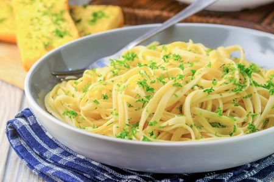

Basic Pasta

Ingredients
- Dried Pasta (Any pasta can work well)
- Water
- Salt
- Tomato Puree
- Cheese/Tuna/Both/None
Methods
- Boil your pasta adding salt to the water later on.
- While pasta is cooking grate your cheese/drain your tuna.
- When the pasta is cooked add about half a tube of tomato puree, stirring well, to give you a passata a consistency. Of course you can just use passata if you want, and drain the pasta instead.
- Then, add the tuna if using any, stirring it in well. Leave for a minute to heat up the tuna. Add salt/pepper to taste.
- Serve into a bowl and sprinkle lots of cheese on top.
Enjoy! This can be enjoyed as a simple tomato pasta, or cheese or tuna, or both. :)
BACK